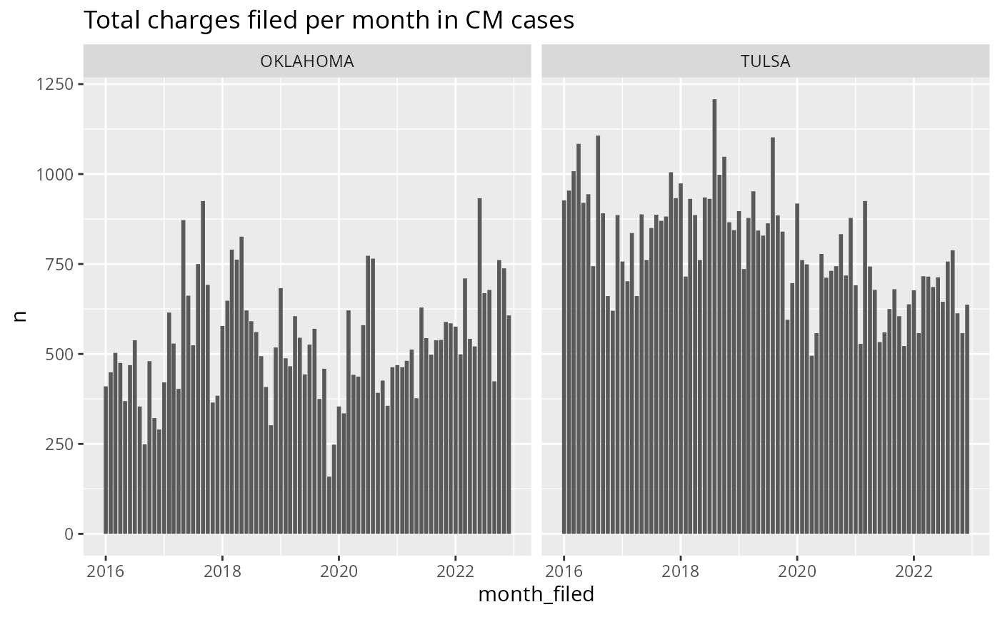
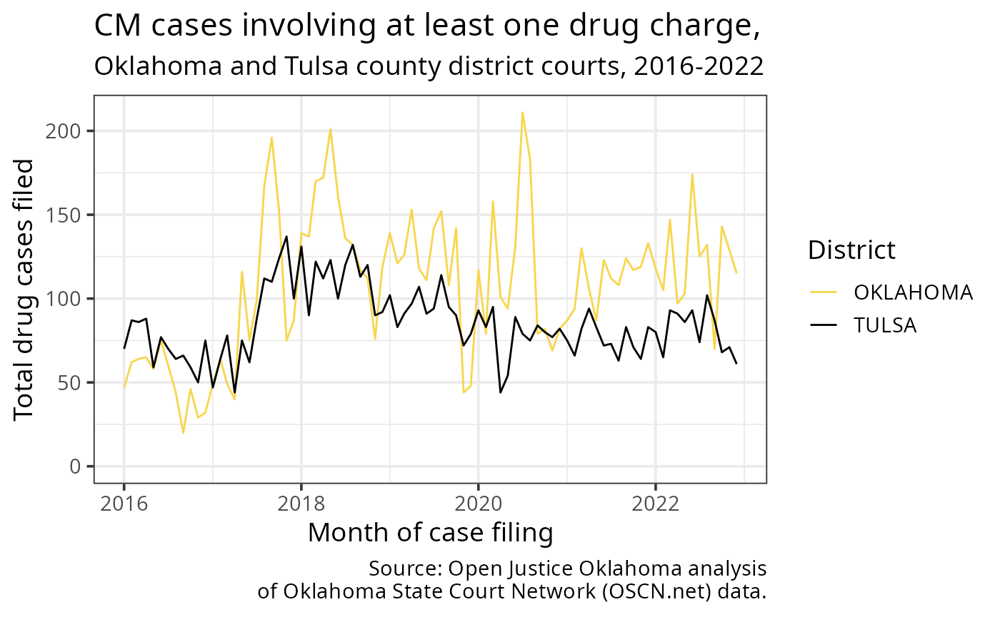

Pulling court data with ojodb
vignette-pulling-data.RmdIntro: The OJO database
Many of our projects and requests involve pulling court data from our OJO database. There are a few other organizations and authorities who have collected this type of data in Oklahoma, but we’re somewhat unique in the amount of data we have and the tools we’ve developed to pull and analyze it.
Our court data comes from two sources:
The Oklahoma State Court Network website, the official record for the most populous and organized counties in the state, and
The On Demand Court Records website, an alternate official record used by the less populous counties.
We scrape the data posted on these websites each day, and store the contents in our database.
Having the data scraped and wrangled like this lets us answer questions that are harder to get a handle on otherwise. For example, legislators and stakeholders will often want to know things like “How many felonies were filed from 2016-2022?”, or “How did eviction filings change during COVID, or as a result of X policy change?” It can be shockingly hard to answer even basic questions like that, even for government officials, and that’s where our database comes in!
To get an idea of how to use the database to answer these kinds of questions, this vignette will walk through all the steps for a hypothetical research question.
Step 1: Getting the lay of the land
Just for educational purposes, we’ll start by taking a look around database and seeing exactly where the court data lives.
Our database is divided into a few “schemas” – if our database is a
big filing cabinet, we can imagine the schemas as separate drawers. You
can see all of them using the ojo_list_schemas()
function.
library(ojodb)
library(dplyr)
ojo_list_schemas()
#> # A tibble: 8 × 1
#> schema
#> <chr>
#> 1 archive
#> 2 doc_tracker
#> 3 eviction_addresses
#> 4 eviction_dashboard
#> 5 iic
#> 6 ocdc
#> 7 odoc
#> 8 publicEach schema, generally speaking, relates to one of our data types / topics / policy areas. Each one contains tables that store data related to that policy area. Among others, we have:
a schema for
ocdc(Oklahoma County Detention Center, i.e. the jail in Oklahoma City),another one for
odoc(Oklahoma Department of Corrections, i.e. Oklahoma state prisons),another for
eviction_addresses(this one contains data related to a specific eviction-related project)

The court data that we’re interested in right now is stored in the
default schema, public. Let’s open the “drawer” and see
what kind of data is inside.
ojo_list_tables(schema = "public")
#> # A tibble: 18 × 2
#> schema table
#> <chr> <chr>
#> 1 public appellate_count
#> 2 public case
#> 3 public representation
#> 4 public citation
#> 5 public minute
#> 6 public issue
#> 7 public exception_log
#> 8 public party
#> 9 public attorney_address
#> 10 public count
#> 11 public migrations
#> 12 public person_record
#> 13 public marital_status
#> 14 public attorney
#> 15 public case_type
#> 16 public event
#> 17 public address
#> 18 public process_logIf a schema is a drawer in our filing cabinet, then tables are the
folders inside. The public schema contains several
different tables, all of which relate back to our court data. Here are
the most important ones to know:
The
casetable contains the basic information about each case. This includes variables like the case number, the date it was filed, the judge it was assigned to, etc. It also includes ID columns that allow you to join it with the other tables in this schema in order to see things like the defendant’s name and DOB, attorneys involved, etc. Each row is one case.The
counttable contains the individual charges filed in each case; most cases involve more than one. Each row is one charge.The
minutetable contains the court minutes for each case. This is where we get data about court fines and fees, among many other things. There are a ton of minutes per case, so working with the minute data often means having to spend a lot of time waiting for data to download. Each row is one court minute.
We can see exactly which variables are included in each table using
the ojo_list_vars() function. For example, let’s take a
closer look at the main case table:
ojo_list_vars(schema = "public", table = "case")
#> # Source: SQL [?? x 1]
#> # Database: postgres [bgregory@34.122.10.67:5432/ojodb]
#> column_name
#> <chr>
#> 1 id
#> 2 title
#> 3 district
#> 4 case_type
#> 5 year
#> 6 case_number
#> 7 date_filed
#> 8 date_closed
#> 9 status
#> 10 judge
#> # … with more rows
#> # ℹ Use `print(n = ...)` to see more rowsWe’re interested in criminal cases right now, so we’ll be pulling data from this table for our example research question.
Step 2: Pulling our data – ojo_crim_cases()
Now that we understand the basic layout of the database, we can start pulling the data we’re interested in! Fortunately, we have helper functions that save us from having to think too much about schemas and tables in our daily work.
Keeping our research question in mind, we’ll start by pulling all the
misdemeanor criminal cases filed in Oklahoma
and Tulsa counties from 2016-2022. We’ll use
one of our helper functions, ojo_crim_cases(), to do so. It
first queries the case table, then combines that table of
cases with each case’s charges from
the count table.
# This function combines the "case" and "count" tables in our database,
# and returns a cleaned dataframe where each row is one charge in a case.
charge_data <- ojo_crim_cases(districts = c("OKLAHOMA", "TULSA"),
case_types = "CM", # "CM" is short for "criminal misdemeanor"
file_years = 2016:2022) |>
# you can add things like filter(), select(), etc. here
collect()The collect() function we’re using is from the
dplyr package. Our helper function
ojo_crim_cases() uses the provided arguments to put
together a query to our database, and the collect()
function executes that query and returns the result as a lazy tibble
into your R environment. If we wanted to, we could add in additional
filtering, sorting, etc. by adding dplyr functions like
filter(), select(), etc. before the
collect() call. But for now, we want to see everything.
Exploring the data we’ve pulled
Now we’ve got our data saved as the object charge_data,
nice! Before we do anything else, let’s start by taking a look at our
dataframe in RStudio using the View() function (or just by
clicking on it in your RStudio “Data” panel).
Charges vs. Cases?
You’ll probably notice that our dataframe includes data on the
individual charges in each case, stored in count_as_filed
and disposition. As discussed above, there’s often going to
be more than one charge involved in a given case, which means that we
should note that our data is in terms of charges, not
cases. Let’s start by seeing how many of each we have
here:
# How many total charges? ------------------------------------------------------
# The data are already in terms of charges (1 charge per row), so we can simply
# count the rows.
charge_data |>
nrow()
#> [1] 111200
# How many total cases? --------------------------------------------------------
# There's more than one charge per case sometimes, so we need to see how many
# unique cases there are total. Here are two possible approaches:
# Approach #1: Creating a new, unique district + case_number variable
charge_data |>
# Case numbers are unique within districts;
# e.g. Tulsa's CM-2023-001 is a different case than Oklahoma's CM-2023-001.
# We can create a new variable that will always be unique -- district + case_number
mutate(case_number_with_district = paste(district, case_number)) |>
distinct(case_number_with_district) |>
nrow()
#> [1] 62186
# This approach returns the number of unique case_number / district combinations,
# but not much else.
# Approach 2: Making a new summary dataset with group_by() + summarize()
case_summary <- charge_data |>
group_by(district, case_number) |>
summarize(
n_charges = n()
# Note: if you want, you can add further summary variables here.
# For example, maybe you want to know how many charges in each case led to
# a conviction. You could do something like this:
# n_convictions = sum(disposition == "CONVICTION", na.rm = T)
)
nrow(case_summary)
#> [1] 62186
# This tells us the number, and also leaves us with a helpful new case_summary
# dataset that we can use later on, if we want to know more.It looks like charge_data includes 111,200 rows. In
other words, our data shows that there were 111,200 total
charges filed in Oklahoma and Tulsa county misdemeanor
cases from 2016-2022.
On the other hand, it looks like there are 62,186 unique combinations
of district and case_number (and an equal
number of rows in our new summary dataframe, case_summary).
In other words, our data shows 62,186 total misdemeanor
cases filed in Oklahoma and Tulsa county from
2016-2022.
If we wanted to, we could divide those numbers (or use our handy
case_summary dataframe) to see the average number of
charges per case:
# Total charges / total cases = Avg. number of charges per case
nrow(charge_data) / nrow(case_summary)
#> [1] 1.788184
# Different approach, same thing
mean(case_summary$n_charges)
#> [1] 1.788184It seems there’s an average of 1.79 counts per misdemeanor case in this dataset. Neat!
It’s very helpful to always be thinking about what the rows in your data represent. Keeping track of what exactly you’re looking at (charges, cases, defendants, etc.) can be one of the most challenging parts of these analyses, especially when our client isn’t exactly sure which they want to know about.
Did we get everything we asked for?
Though we have data coverage and quality checks already as part of
our scrapers and database, court data is always extremely messy, which
can lead to unforeseen issues. Knowing this, it’s usually a good idea to
double check your data after you’ve pulled it in order to ensure
ojo_crim_cases() returned all the data you requested.
We should at least check the data geographically and temporally; in other words, we should make sure there aren’t any weird, unexpected differences between counties or between filing years / months. How exactly you do this due diligence is up to you, but one potential approach is to make a quick visualization or two. For example:
library(lubridate)
library(ggplot2)
# We're going to look at charges, not cases here
charge_data |>
mutate(
# Our end goal is to see monthly filings, so we'll use that same timeframe
month_filed = floor_date(date_filed, "months")
) |>
count(district, month_filed) |> # Our two most important checks, geography and time
ggplot(aes(x = month_filed,
y = n)) +
# I'm choosing geom_col() over geom_line() because I want to see any gaps clearly
geom_col() +
facet_wrap(~district) +
scale_y_continuous(limits = c(0, NA)) +
labs(title = "Total charges filed per month in CM cases")
This graph looks pretty much as we’d expect it to – there’s not a huge difference between Oklahoma and Tulsa counties (which makes sense, given that they’re similar in size), and there aren’t any conspicuously missing months, suspiciously massive and sudden spikes / drops, etc. And while there is a lot of variation (particularly in Oklahoma county), there’s nothing that looks suspicious enough for me to suspect a data issue.
It would be great if there was an absolute source of truth that we could use to double check this stuff more reliably. An internal data quality monitoring dashboard that serves this purpose is on our list of goals, and hopefully that will serve as an easy reference point in the future. But for now, this part of the process is all about looking at the data from different angles and thinking critically about where you might run into potential issues, and how those issues might show up in your testing. Referencing past OKPI work is also another good option, and so is asking another analyst who is more familiar with the data in that area.
Back to our research question
Now we’ve got a big dataset of all the charges we care about
(charge_data) and another big dataset of all the cases we
care about (case_summary), we’ve familiarized ourselves
with what they look like and what they mean, and we’ve double checked
that the data are all there. Let’s revisit our research question now to
see what cleaning and wrangling we need to do in order to finish
answering it.
How many misdemeanor cases involving drugs were filed in Oklahoma and Tulsa county in each month from 2016-2022?
We’ve got the “misdemeanor cases filed in Oklahoma and Tulsa county from 2016-2022” part down, but we’re still missing a few things. Namely,
we still need to filter our data to include only cases involving drugs, and
we still need to calculate the number of cases filed per month in this timespan.
We’ll move on to those steps next.
Step 3: Wrangling, cleaning, and analyzing the data
Searching for drug-related charges
First, we’ll need to limit our dataset to cases involving drugs. But what exactly does that mean? Do we want any kind of case at all where at least one of the charges was drug-related, or only cases where all the charges were drug related? What exactly do we count as “drug-related” charges, anyway? Frequently, our partners will make vague asks like this and leave it to us to answer those questions.
You’ll also notice that the data in the count_as_filed
column is very messy, and we won’t be able to do something as simple as
filter(count_as_filed == "Drug Possession"). So we’ll need
to find a way of parsing that text in order to find the charges we
need.
The answers to these methodology questions will depend on the exact task at hand, but our goal is to make our research methodology as standardized and replicable as possible. That also means we don’t want to re-invent the wheel – Open Justice Oklahoma has done lots of work on drug laws in the past, and so we have a fairly well established way of searching the statutes for relevant charges. Here are some of the places you can go to see how OJO has handled methodology / data issues in the past:
- The Oklahoma Policy Institute Stack Overflow site has a Q/A format like the Stack Overflow we all know and love. If you run into a new issue we don’t have documented here, feel free to add your own questions / answers as needed!
- Searching the Open Justice Oklahoma Github repos for keywords can sometimes turn up past work, especially when you’re dealing with a more technical coding issue.
- The Oklahoma Policy Institute blog page has finished products we’ve helped put out in the past, with work on evictions, drug laws, felony reclassification, fines and fees, etc.
- And, of course, please don’t hesitate to ask on Slack! It’s easy for things to get lost in the shuffle and not make it into documentation anywhere, and despite our efforts, there are still a lot of things that only live inside someone’s brain.
In this case, we’re going to use a regex string that OJO’s founder Ryan Gentzler originally wrote to find any kind of drug-related charge, including things like paraphernalia, trafficking, etc. Here’s the string:
drugs <- "CDS|C\\.D\\.S|DRUG|OXY|HUFF|AMPHET|ZOLOL|ZOLAM|HYDROC|CODEIN|PRECURS|
|XANAX|MORPH|METERDI|ZEPAM|LORAZ|VALIU|EPHED|SUB|COCA|PSEUDO| CD|CD |PRESCRIP|
|NARC|METH|C\\.D\\.|HEROIN|ANHYD|AMMONIA|OPIUM|LORTAB|MARIJUANA|CANNABIS|MJ"While I was writing this vignette, I found it by searching “drugs”
and “marijuana” on our Github. It should really be a lot easier and more
streamlined than that, though, so in the future this will hopefully be
integrated as part of the {ojodb} package.
We’ll start by adding a new variable that simply classifies each charge as drug-related or not.
# We'll save it as a new dataframe, charge_data_cleaned
charge_data_cleaned <- charge_data |>
select(-c(id, counts, open_counts)) |> # We don't need every column, so let's drop the extras
mutate(
drug_charge = grepl(pattern = drugs, # Do any of our "drug" strings...
x = count_as_filed, # ...show up in count_as_filed?
ignore.case = TRUE) # ignore.case is important!
)Note the inclusion of ignore.case = TRUE! Although most
of the data in the count_as_filed column is in uppercase,
you shouldn’t assume anything in this court data will
be uniform. Much of it is hand-entered by the county clerks, and there
are frequent typos, differences in phrasing between districts, random
lowercase entries, etc. It is very messy, which means we have
to be vigilant when it comes to double-checking our work and not making
too many assumptions about the data.
Again, let’s stop and check to make sure the result looks as we expect it to.
charge_data_cleaned |>
select(district, case_number, count_as_filed, drug_charge) |>
group_by(drug_charge) |>
slice_sample(n = 10) # We'll just look at a random sample of 10 in each category
#> # A tibble: 20 × 4
#> # Groups: drug_charge [2]
#> district case_number count_as_filed drug_…¹
#> <chr> <chr> <chr> <lgl>
#> 1 OKLAHOMA CM-2021-2514 OBS, OBSTRUCTING AN OFFICER FALSE
#> 2 OKLAHOMA CM-2016-2037 DR1, BEING INTOXICATED IN A PUBLIC PLACE FALSE
#> 3 TULSA CM-2022-2478 RES, RESISTING AN OFFICER FALSE
#> 4 OKLAHOMA CM-2017-1981 ABDOM, DOMESTIC ABUSE ( ASSAULT & BATTERY) FALSE
#> 5 TULSA CM-2021-3589 S11, SPEEDING - POSTED ZONE FALSE
#> 6 OKLAHOMA CM-2019-3781 BH, THREATENING TO PERFORM AN ACT OF VIOLENCE FALSE
#> 7 TULSA CM-2020-4220 RCSP, RECEIVE, POSSESS OR CONCEAL STOLEN PROPE… FALSE
#> 8 TULSA CM-2016-836 DL2, DRIVING UNDER SUSPENSION / DUS FALSE
#> 9 TULSA CM-2022-1743 ABDOM, DOMESTIC ASSAULT AND BATTERY FALSE
#> 10 OKLAHOMA CM-2021-2486 DI1AG, AGGRAVATED DRIVING UNDER THE INFLUENCE … FALSE
#> 11 TULSA CM-2018-2200 DU4, POSSESSION OF CONTROLLED DRUG TRUE
#> 12 TULSA CM-2019-3308 DI2D, DUI DRUGS TRUE
#> 13 OKLAHOMA CM-2021-1954 WE5, CARRYING A FIREARM WHILE UNDER THE INFLUE… TRUE
#> 14 OKLAHOMA CM-2016-2238 DU9, POSSESSION OF CDS - MARIJUANA TRUE
#> 15 OKLAHOMA CM-2021-1684 DU9II, UNLAWFUL POSSESSION OF CONTROLLED DRUG-… TRUE
#> 16 TULSA CM-2020-2985 DR3, UNLAWFUL POSSESSION OF DRUG PARAPHERNALIA TRUE
#> 17 OKLAHOMA CM-2016-1492 DU9IV, POSSESSION OF A CONTROLLED DANGEROUS SU… TRUE
#> 18 OKLAHOMA CM-2020-3411 DU9II, UNLAWFUL POSSESSION OF CDS- METHAMPHETA… TRUE
#> 19 OKLAHOMA CM-2018-2177 DU9II, POSSESSION OF A CDS- METHAMPHETAMINE TRUE
#> 20 OKLAHOMA CM-2020-530 DU9, UNLAWFUL POSSESSION OF CONTROLLED DRUG/MA… TRUE
#> # … with abbreviated variable name ¹drug_chargeIt looks like our regex search was pretty successful! Although it may raise some new questions: does driving under the influence count? Is alcohol technically a “drug” in those cases, or is that different? What about a count description that says “Carrying a firearm while under the influence o drugs or alcohol”?
There are always going to be more questions like this, and you’ll find them when you start digging in and double-checking your data. In the end, we want to prioritize standardization and giving our client whatever they actually want / need (even if we have to help them figure out exactly what that is). For now, we’ll just accept the result as-is, but at this point you might need to stop, re-assess some things, ask other analysts / policy team their thoughts, follow up with a client, etc.
Summarizing drug charges within cases
We have one more wrangling task we need to figure out – we know what
counts as a drug charge, but what about a drug case?
For our purposes, we’ll say that a drug case means any case involving at
least one drug charge. Therefore, we’re going to make another version of
our case_summary dataframe, this time with a new variable
drug_charges_present:
case_summary_cleaned <- charge_data_cleaned |>
group_by(district, case_number) |>
# We want to keep the date_filed, so we'll use transmute() this time instead of summarize()
transmute(
date_filed = date_filed,
# It will be helpful to have all the values of count_as_filed verbatim for double-checking
list_all_charges = paste(count_as_filed, collapse = "; "),
n_total_charges = n(),
# Count the number of rows where drug_charge == TRUE
n_drug_charges = sum(drug_charge, na.rm = TRUE),
drug_charges_present = if_else(n_drug_charges > 0, TRUE, FALSE)
) |>
ungroup() |>
distinct() # transmute() leaves duplicate rows, so we'll drop those
# Alternative approach:
# case_summary_cleaned <- charge_data_cleaned |>
# group_by(district, case_number) |>
# summarize(
# date_filed = unique(date_filed),
# list_all_charges = paste(count_as_filed, collapse = "; "),
# n_total_charges = n(),
# n_drug_charges = sum(drug_charge, na.rm = TRUE),
# drug_charges_present = if_else(n_drug_charges > 0, TRUE, FALSE)
# ) |>
# ungroup()We’ll also save a new dataframe that only includes the drug cases. We can double check the result just like before, and see how many drug cases we have total:
case_summary_cleaned_drugs <- case_summary_cleaned |>
filter(drug_charges_present)
case_summary_cleaned |>
group_by(drug_charges_present) |>
slice_sample(n = 10)
#> # A tibble: 20 × 7
#> # Groups: drug_charges_present [2]
#> district case_number date_filed list_all_charges n_tot…¹ n_dru…² drug_…³
#> <chr> <chr> <date> <chr> <int> <int> <lgl>
#> 1 TULSA CM-2022-898 2022-03-21 BC, BOGUS CHECK UND… 1 0 FALSE
#> 2 TULSA CM-2017-77 2017-01-06 OBS, OBSTRUCTING AN… 2 0 FALSE
#> 3 OKLAHOMA CM-2020-2149 2020-07-22 DI1M, DRIVING UNDER… 1 0 FALSE
#> 4 TULSA CM-2016-4957 2016-09-28 ABDOM, ASSAULT AND … 1 0 FALSE
#> 5 OKLAHOMA CM-2020-3383 2020-11-05 OBS, OBSTRUCTING AN… 1 0 FALSE
#> 6 TULSA CM-2022-1212 2022-04-13 DI1, DRIVING UNDER … 2 0 FALSE
#> 7 OKLAHOMA CM-2021-320 2021-02-01 DI1, DRIVING UNDER … 1 0 FALSE
#> 8 TULSA CM-2020-3872 2020-11-04 DE0, OPERATE VEHICL… 3 0 FALSE
#> 9 TULSA CM-2020-459 2020-01-30 ABDOM, ASSAULT AND … 1 0 FALSE
#> 10 TULSA CM-2018-4607 2018-10-02 FORG, UTTERING FORG… 1 0 FALSE
#> 11 TULSA CM-2020-1770 2020-05-22 DR3, POSSESSION OF … 6 4 TRUE
#> 12 TULSA CM-2016-5539 2016-11-03 OBS, OBSTRUCTING AN… 5 2 TRUE
#> 13 OKLAHOMA CM-2021-1728 2021-06-29 DU9II, UNLAWFUL POS… 1 1 TRUE
#> 14 TULSA CM-2022-3479 2022-10-13 DU9I, UNLAWFUL POSS… 2 1 TRUE
#> 15 TULSA CM-2019-3575 2019-08-08 DR3, POSSESSION OF … 2 2 TRUE
#> 16 TULSA CM-2019-1186 2019-03-13 LP1, FAILURE TO PAY… 6 1 TRUE
#> 17 TULSA CM-2016-628 2016-02-04 TU0, REQUIRED POSIT… 4 1 TRUE
#> 18 OKLAHOMA CM-2016-1610 2016-06-15 DU9, POSSESSION OF … 2 1 TRUE
#> 19 TULSA CM-2022-2475 2022-07-22 DU8II, POSSESSION O… 1 1 TRUE
#> 20 OKLAHOMA CM-2020-1607 2020-06-15 DU9, UNLAWFUL POSSE… 2 2 TRUE
#> # … with abbreviated variable names ¹n_total_charges, ²n_drug_charges,
#> # ³drug_charges_present
# view(case_summary_cleaned)
# What proportion of these CM cases feature a drug charge?
nrow(case_summary_cleaned_drugs) / nrow(case_summary_cleaned)
#> [1] 0.2604766Nice! Now we have some nice, clean datasets to visualize. This stage of analysis is tough sometimes; it involves a lot of subjective decision-making, a lot of making the most of messy data, and a lot of double-checking of work. But even though we’re aiming for standardized methods, it’s also one of the areas where we get to exercise a little bit of creativity and come up with our own solutions to things, so feel free to blaze your own path a little bit too!
Step 4: Visualizing and exporting the data
To finish things off, we’re going to make ourselves a nice, pretty
graph showing how many of our drug cases were filed each month
throughout the timespan of our data. We’ll be using the
ojo_theme() and ojo_colors() functions from
{ojodb} to take care of most of the styling.
case_summary_cleaned_drugs |>
mutate(
month_filed = floor_date(date_filed, "months")
) |>
count(month_filed, district) |>
ggplot(aes(x = month_filed,
y = n,
color = district)) +
geom_line() +
scale_y_continuous(limits = c(0, NA)) + # Usually we want to show the y-axis down to zero
ojo_theme() +
ojo_color() +
labs(
title = "CM cases involving at least one drug charge,",
subtitle = "Oklahoma and Tulsa county district courts, 2016-2022",
x = "Month of case filing",
y = "Total drug cases filed",
caption = "Source: Open Justice Oklahoma analysis
of Oklahoma State Court Network (OSCN.net) data.",
color = "District"
)
Looking good! If you’re curious about the increase seen around July of 2017, you can read about why that happened here.
We also frequently need to send out data in spreadsheet form. You’ll
typically want to export datasets using the readr package
in whatever format your client needs. A good default option is our old
friend the Comma Separated Values format, .csv. Here, we’d
do that with
write_csv(case_summary_cleaned_drugs, "export-data.csv").
Exporting to the Microsoft Excel spreadsheet format .xlsx
will require the readxl package.
Step 5: Review and deliver
The last step in the process is to submit your work for a review. Ideally, we should try to make sure everything we do has at least two people (an analyst and a reviewer) look over it before we send it out to a client or publish it. The review process should check every step in the process, and include any needed discussions about the methodological questions we talked about earlier.
We’re aiming to start doing reviews via Github. The process will essentially be:
- Open a pull request with all your code.
- Request a reviewer on the pull request, and let them know you’re ready for them to look it over via Slack, etc.
- They should pull your code from GitHub and run it locally on their machine, checking each step of the process along the way. Any notes, changes, etc. should be included in their review on GitHub, so you can see everything in one convenient place.
- Once all edits have been addressed, we can merge the pull request
and we’ll have a nice finished product on our
mainbranch!
From there, all you’ll have to do is write up an email (or whatever delivery method is relevant) and send your data / visualizations out to whoever needs them.
If I wrote all of this correctly and you managed to follow along, then congratulations to both of us! You’ve successfully learned how to pull court data from the OJO database and use it to answer a research question about our legal system. You’ll probably run into a lot of things that aren’t covered in this vignette as you tackle new questions and use new parts of our data, but hopefully this will be a useful resource as you’re starting out.
Just remember – the data is very quirky, and there’s always going to be stuff you don’t know and problems you aren’t sure how to solve. Whether it’s a methodology issue, a coding issue, a “dealing with a client” kind of issue, whenever you find yourself spinning your wheels, please don’t hesitate to just ask! There’s a good chance OJO has been there before, and if not, we’ll figure it out together. Thanks for reading!